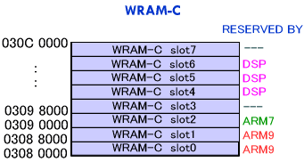

#include <twl/mi.h>u32 MI_AllocWram( MIWramPos wram, MIWramSize size, MIWramProc proc )u32 MI_AllocWramSlot( MIWramPos wram, int slot, MIWramSize size, MIWramProc proc )(define)
#define MI_AllocWram_A( size, proc );
#define MI_AllocWram_B( size, proc );
#define MI_AllocWram_C( size, proc );
#define MI_AllocWramSlot_A( slot, size, proc );
#define MI_AllocWramSlot_B( slot,.size, proc );
#define MI_AllocWramSlot_C( slot, size, proc );
| wram | 確保する対象のWRAM |
| slot | スロット番号 |
| size | 確保する領域の大きさ |
| proc | 使用するプロセッサ |
確保できたときは、その先頭アドレスを返します。
確保できなかったときは MI_WRAM_ALLOC_FAIL (0 に define されています) を返します。
WRAM から領域を確保します。
wram は対象となる WRAM で、MIWramPos 型です。MI_WRAM_A, MI_WRAM_B, MI_WRAM_C のいずれかとなります。
size は、確保しようとする領域の大きさです。MIWramSize 型で、MI_WRAM_SIZE_xxxKB となります。xxx には 0 〜 256 の値が入りますが、WRAM-A の場合は確保できる大きさは64KB単位で、WRAM-B、WRAM-C の場合は 32KB 単位です。
proc は、その確保する領域をどこが使用するかを表します。MIWramProc 型で、MI_WRAM_ARM9, MI_WRAM_ARM7, MI_WRAM_DSP のいずれかとなります。
MI_AllocWram_A は MI_AllocWram( MI_WRAM_A, ... ) の define です。
MI_AllocWram_B は MI_AllocWram( MI_WRAM_B, ... ) の define です。
MI_AllocWram_C は MI_AllocWram( MI_WRAM_C, ... ) の define です。
MI_AllocWramSlot_A は MI_AllocWramSlot( MI_WRAM_A, ... ) の define です。
MI_AllocWramSlot_B は MI_AllocWramSlot( MI_WRAM_B, ... ) の define です。
MI_AllocWramSlot_C は MI_AllocWramSlot( MI_WRAM_C, ... ) の define です。
MI_AllocWram*() によって確保される領域は、
・その時点で使用されていない
・指定のプロセッサに予約されているか、どこからも予約されていない
・指定のサイズ分、連続領域を確保することが出来る
を満たしている中で、下位アドレス側から確保されます。
MI_AllocWramSlot*() の場合は、確保する場所を指定することが出来ます。ただしその領域が取得条件を満たさなければ、たとえそれ以外で確保できる場所があっても失敗となります。
(例) 以下のように WRAM-C が予約されている場合を考えます。但しまだどの領域も確保はされていないとします。

どこもまだ確保していない場合、
MI_AllocWram_C( MI_WRAM_SIZE_64KB, MI_WRAM_ARM7 )
→ slot2 と slot3 を確保します。返り値は 0x03950000 です。
どこもまだ確保していない場合、
MI_AllocWram_C( MI_WRAM_SIZE_64KB, MI_WRAM_DSP )
→ slot3 と slot4 を確保します。返り値は 0x03958000 です。
どこもまだ確保していない場合、
MI_AllocWram_C( MI_WRAM_SIZE_96KB, MI_WRAM_ARM7 )
→ 確保できません。返り値は MI_WRAM_ALLOC_FAIL (=0) です。
2007/08/22 初版